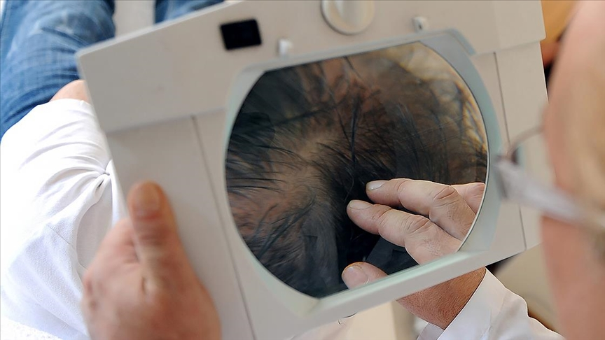
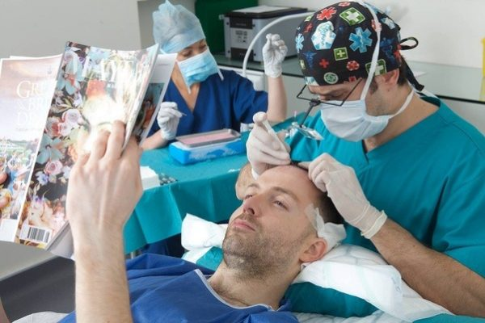

Saç Ekimi Turizmi
Türkiye çeşitli sağlık problemlerinden zorunlu olarak yapılan tıbbi operasyonların yanı sıra, saç ekimi için de çok sayıda ziyaretçi ağırlıyor. Uygun fiyatlar, profesyonel ellerde hizmet, ülkemizin doğal ve tarihi güzellikleri hastaların Türkiye'ye geliş sebeplerinin başında yer alıyor. Türkiye'de ortalama saç ekimi fiyatları 3-5 bin TL iken bu fiyatlar Avrupa'da 10-15 bin euro, ABD'de ise 30 bin dolara kadar yükselebiliyor. Türkiye özellikle saç ekimi konusunda ucuz ve kaliteli hizmet veriyor.
Alanında deneyimli uzmanlardan çok başarılı sonuçlar elde ediliyor. Çalışmalar dünya standartlarının oldukça üstünde. Bu sebeple her ay 5 binden fazla turist saç ekimi için ülkemize geliyor. Hastaneler ve turizmciler birlikte hareket ediyor. Saç ekim paketleri sayesinde hasta Türkiye'yi hem geziyor hem de saç ekimi yaptırıyor. Toplu olarak yapılan geziler bile hastaneler ve turizmciler tarafından organize ediliyor. Hastaları havaalanından tercüman ve şoför alıyor, işlem bittiğinde de havaalanına geri bırakıyor. Hasta alışverişe gitmek isterse ona yardımcı olunuyor. Bu nedenle her ay 5 binin üzerinde turist saç ekimi için ülkemize konuk oluyor. Sağlık turizminin 2023 hedefi de 20-25 milyon dolar, dolayısıyla bu kadar yüksek talebin bizi hedefimizin üzerine taşıyacağından eminim.
 Turizm türleri arasında destinasyon için en fazla girdiyi sağlayan turizm çeşitlerinden biri olarak sağlık turizmi gösterilmektedir. Son yıllarda, sağlık turizmi birçok ülke ve destinasyonun gündeminde yer almakta ve büyük yatırımlar yapılmaktadır. Sağlık turizmi kapsamında yer alan faaliyetlerden biri de saç ekim tedavisidir. Çalışmada dünyada saç ekimi konusunda birinci sırada yer alan Türkiye ve ikinci sırada yer alan Polonya’nın verdiği hizmetler GZFT analizi yardımıyla karşılaştırmalı olarak analiz edilmiştir. Araştırmada, literatür taraması ve görüşme yöntemleri kullanılmıştır. Sonuç olarak maliyet, kalite güvencesi, akreditasyon ve kolay ulaşılabilirliğin destinasyonların rekabeti açısından öne çıkan faktörler olduğu görülmüştür.